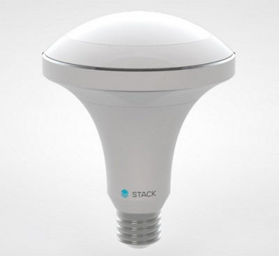
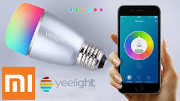

LAMPU PINTAR (SMART LAMP)
Nama Kelompok :1 Andi Pranata Ginting
2 Agus Susanto
3 Glorianta Barus
4 Roni Sanjaya Purba
5 Steven Stefanus
Pendahuluan
ini banyak orang yang membuat lampu penerangan yang dapat mengatur cahaya lampu secara otomatis.
Lampu penerangan tersebut dilengkapi dengan sensor-sensor dan alat kontrol dengan tujuan sebagai langkah dalam mencapai efisiensi
Sensor-sensor yang digunakan pada lampu tersebut adalah sensor deteksi keberadaan dan sensor deteksi cahaya.
Kedua sensor tersebut berfungsi untuk menyalakan/memadamkan lampu secara otomatis berdasarkan keberadaan orang (auto switch) dan untuk mengatur tingkat iluminasi dalam ruangan sesuai kebutuhan (auto illumination).
Tentang Lampu Pintar
Lampu pintar berbasis LED dengan Multi Sensor adalah sebuah alat lampu penerangan yang menggunakan LED (Light Emiting Diode) sebagai sumber cahaya penerangan dan multi sensor sebagai auto illumination. LED dan multi sensor tersebut telah terintegrasi menjadi satu produk lampu penerangan yang pintar dalam memberikan pencahayaan sesuai dengan kebutuhan pengguna secara otomatis berdasarkan keadaan cahaya ambien dan aktivitas disekitarnya
Lampu Pintar
Pada pembuatan Lampu Pintar Berbasis LED dengan Multi Sensor ini, metodologi dibagi menjadi dua tahapan yaitu tahapan pembuatan perangkat keras (hardware), dimana pada tahapan ini dibuat beberapa rangkaian elektronika dan mekanik dari Lampu Pintar Berbasis LED.
Alat/Perangkat Yang Sejenis
1. Alba Light
Gambar 1. Lampu Alba
Alba Light merupakan salah satu lampu canggih yang dimana lampu ini telah dilengkapi dengan sensor yang mampu mendeteksi kondisi ruangan dikarenakan kebiasaan sang pemiliknya
Kecanggihan dari sensor yang terdapat pada lampu tersebut adalah, Anda tidak akan memerlukan kontak On/Off, karena Alba Light mampu menyesuaikan kondisi ruangan yang dibutuhkan oleh pemiliknya secara responsif. Misal, pada saat ruangan dimasuki oleh sang pemilik rumah, Alba Light akan menyala secara otomatis. Atau pada saat sang pemilik rumah sedang berada diruang kerja atau ketika ingin membaca buku, cahaya yang dihasilkan oleh Alba Light akan menjadi lebih terang berwarna putih secara otomatis, sesuai dengan yang dibutuhkan oleh sang pemiliknya.
2. Xiaomi Yeelight RGBW
Gambar 2. Lampu Xiaomi Yeelight RGBW
Lampu pintar ini berasal dari salah satu vendor ternama yaitu Xiaomi. Lampu ini memungkinkan pemiliknya dapat mengendalikannnya dari jarak jauh,hanya dengan mendownload aplikasi Mi Home lalu membuat akun Xiaomi.
Cara setting Xiaomi Yeelight RGBW terbilang cukup mudah, dimana lampu pintar ini juga menyediakan fitur untuk mengatur kecerahan dan warna default yang digunakan. Berkat LED puth dan berwarna, lampu ini bisa menghasilkan cahaya hangat hingga dingin dan berbagai variasi warna yang cantik.
Lampu Pintar Yang Diusulkan
Pada pembuatan Lampu Pintar Berbasis LED dengan Multi Sensor ini, metodologi dibagi menjadi dua tahapan yaitu tahapan pembuatan perangkat keras (hardware), dimana pada tahapan ini dibuat beberapa rangkaian elektronika dan mekanik dari Lampu Pintar Berbasis LED.

Gambar 2. Blok Diagram Lampu Pintar Berbasis LED dengan Multisensor
Adapun blok diagram dari sistem Lampu Pintar Berbasis LED dengan Multi Sensor dapat dilihat pada Gambar 1. Pembuatan perangkat keras untuk lampu pintar meliputi :
- Pembuatan pada bagian elektronika untuk Lampu Pintar Berbasis LED dengan Multi Sensor
- Pembuatan mekanik Lampu Pintar Berbasis LED dengan Multi Sensor menggunakan standar soket E27 dimana semua bagian elektronika tersebut di atas terintegrasi dalam satu kesatuan lampu penerangan sehingga menjadi sebuah Lampu Pintar Berbasis LED dengan Multi Sensor
Flowchart Lampu Pintar Berbasis LED dengan Multi Sensor
Just the beginning…
- Edit HTML markup in src/index.html
- Edit Stylus styles in src/styles/user.styl
- Edit JavaScript in src/scripts/main.js
- Enjoy! :) -@markdalgleish